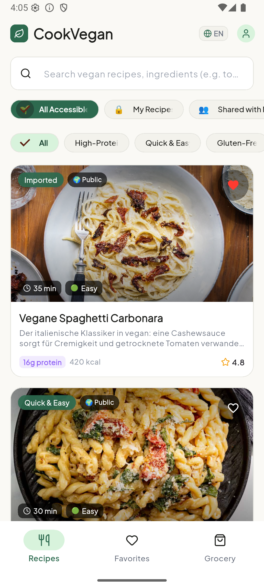
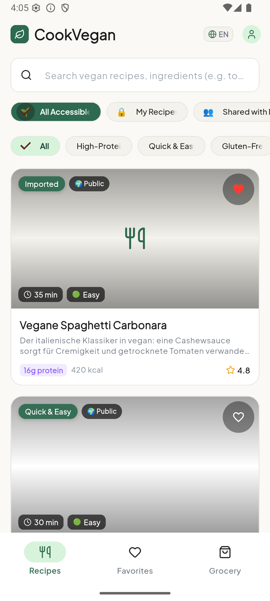
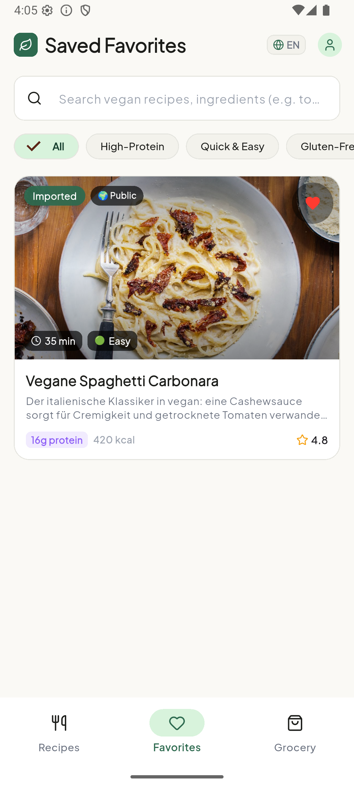
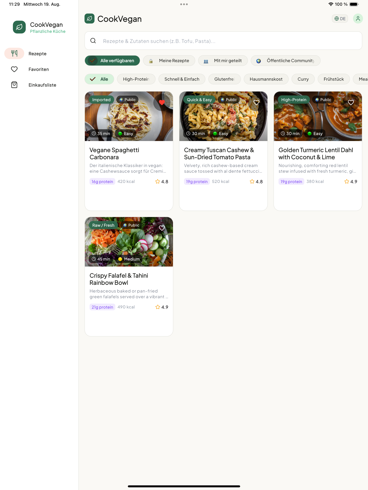
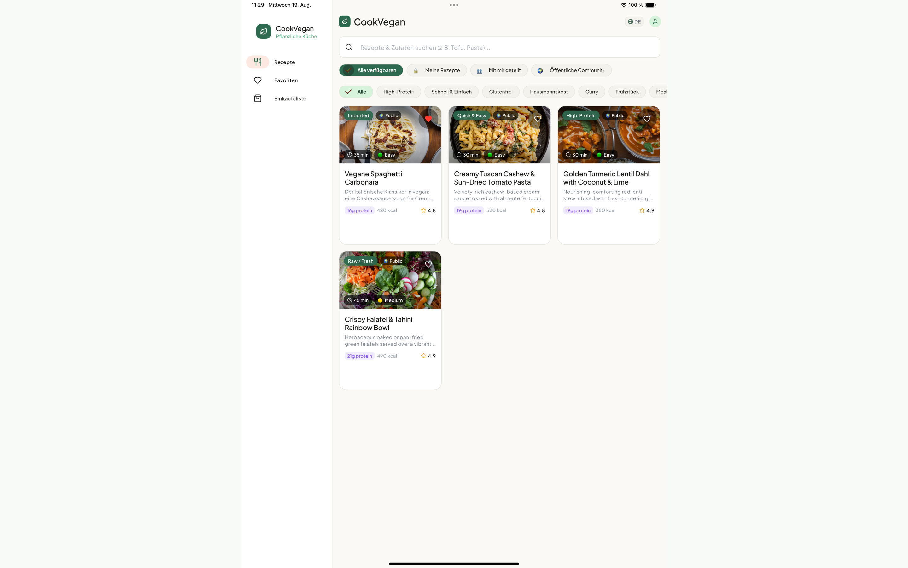

Die intelligente Rezept- und Koch-App für die pflanzliche Küche. Mit 3-Stufen Cloud-Sicherheit, automatischem Web-Rezept-Import, dynamischer Portionen-Skalierung, vollständiger B12-/Mineralstoff-Nährwertanalyse und interaktivem Koch-Modus.
Privat 🔒 • Geteilt 👥 • Community 🌍
Vollständige Makro- & Mikronährstoffe
Schritt-für-Schritt mit Küchentimern

Elegantes Botanical Sage Design optimiert für Smartphone, iPad-Split-View, Android-Tablets und Desktop.




CookVegan kombiniert modernste Cloud-Technologie mit praktischen Werkzeugen für den täglichen Kochalltag.
Entscheiden Sie pro Rezept: Privat 🔒 (nur für Sie), Geteilt 👥 (mit Freunden per E-Mail synchronisiert) oder Community 🌍 (öffentlich im veganen Feed).
Ablenkungsfreie Vollbildansicht für die Küchentheke mit großen Schritten, Fortschrittsanzeige und integrierten Küchentimern (+1 Min Schnellzugriff).
Fügen Sie beliebige Links von Foodblogs oder Rezeptseiten ein – CookVegan parst automatisch strukturierte JSON-LD Daten (schema.org) und übernimmt Zutaten und Zubereitung.
Übernehmen Sie Rezeptzutaten mit einem Klick in Ihre Einkaufsliste – automatisch sortiert nach Supermarktgängen (Obst & Gemüse, Tofu & Kühlung, Hülsenfrüchte & Gewürze).
Portionen frei anpassen mit echten Küchen-Bruchzahlen (z. B. ½ TL oder 1 ¼ Tassen). Automatische Hoch- und Runterrechnung aller Mengen und Nährwerte.
Nahtloser Wechsel zwischen Deutsch und Englisch. Adaptives UI optimiert für Smartphone, iPad-Split-View, Android-Tablets, Mac-Desktop und Web.